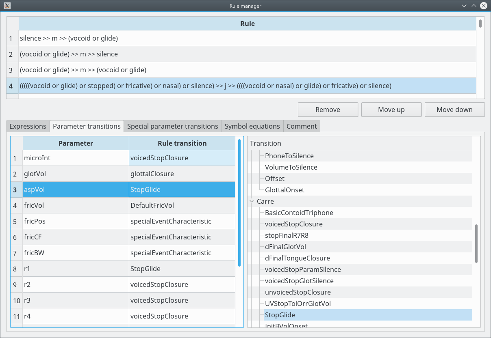

Index
GamaTTS:Editor
Contact
Rule manager - transitions

Operations:
Select a Transition for a parameter:
Select the parameter and select the Transition on the Transitions tree. All parameters must have a Transition assigned to them.